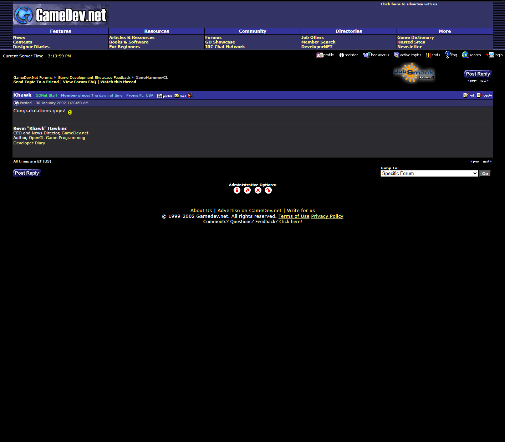

A rendered local exhibit of the short feedback thread tied to the XenoHammerGL showcase page.

The archived breadcrumb trail places the post inside GameDev.Net Forums > Game Development Showcase Feedback > XenoHammerGL.
Post date: January 30, 2002, 1:26:50 AM
Poster: Khawk (GDNet Staff)
Congratulations guys!
Even though the thread is short, it is a useful timestamp: public showcase visibility, staff acknowledgement, and a contemporaneous record that XenoHammerGL was active on GameDev.net.